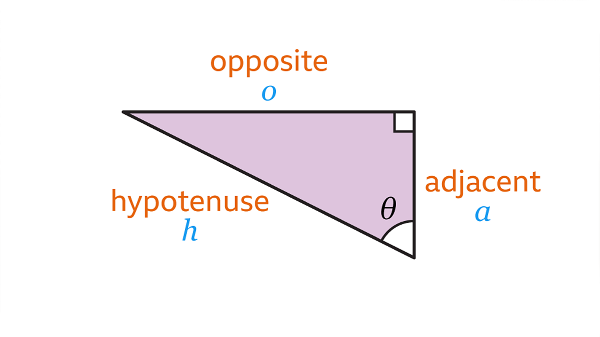
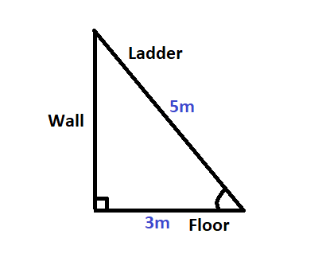
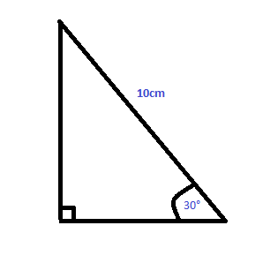

📘 Lesson: Trigonometric Ratios
1. Introduction
Trigonometry is the study of the relationship between the angles and sides of triangles. In right-angled triangles, we define special ratios that help us calculate unknown sides or angles. These are called trigonometric ratios.
2. Right-Angled Triangle Setup
In a right-angled triangle:
- Hypotenuse (H): side opposite the right angle, longest side.
- Opposite (O): side opposite the angle we are considering (θ).
- Adjacent (A): side next to the angle θ (but not the hypotenuse).
3. The Six Trigonometric Ratios
sin θ = Opposite / Hypotenuse
cos θ = Adjacent / Hypotenuse
tan θ = Opposite / Adjacent
csc θ = 1/sin θ = Hypotenuse / Opposite
sec θ = 1/cos θ = Hypotenuse / Adjacent
cot θ = 1/tan θ = Adjacent / Opposite
Memory Aid: SOH-CAH-TOA
4. Worked Examples
1. A ladder 5 m long leans against a wall. The foot of the ladder is 3 m away from the wall. Find the angle the ladder makes with the ground.
Solution:
- Hypotenuse = 5 m
- Adjacent = 3 m
Using cosine:
cos θ = 3/5
θ = cos-1(3/5) = 53.13°
The ladder makes an angle of about 53° with the ground.
Example 2 In a right-angled triangle, the angle at θ is 30° and the hypotenuse is 10 cm. Find the opposite and adjacent sides (to θ).
Solution:
sin 30° = opposite / hypotenuse ⇒ opposite = 10 × sin 30° = 10 × 0.5 = 5 cm
cos 30° = adjacent / hypotenuse ⇒ adjacent = 10 × cos 30° ≈ 10 × 0.8660 = 8.66 cm
Answer: Opposite = 5 cm, Adjacent = 8.66 cm.
5. Applications in Real Life
- Measuring heights of buildings, trees, or mountains without climbing.
- Navigation and bearings in ships and airplanes.
- Engineering and architecture (designing slopes, bridges, roofs).